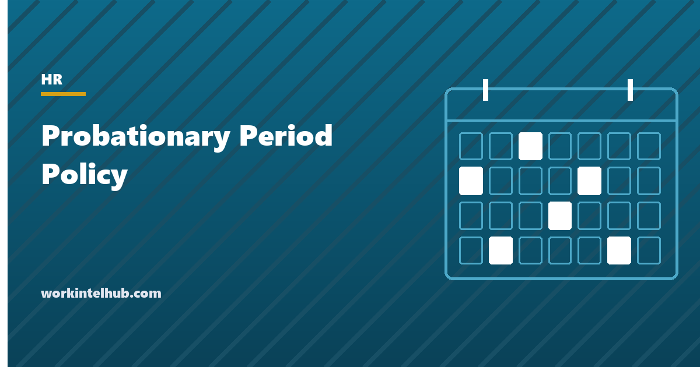

Probationary Period Policy

A probationary period is the first 60, 90 or 180 days of employment, during which the employer says it is assessing the fit and the employee understands that the job is not yet settled. In 49 states it changes nothing legally, because employment is at will before, during and after it. What it changes is expectations, and expectations are what courts have used to find that an employer promised more than at-will. That is why most employment lawyers now advise calling it an introductory period and adding one sentence that says the end of the period changes nothing.
The generator below writes the policy with that sentence in it. The rest of the page covers the wording problem, the Montana exception, what the period is actually useful for, and how to run the check-ins so that a decision at day 90 is a decision and not a surprise.
Introductory period policy generator
See the wording section for why the first option is the default.
Nothing typed here leaves your browser. The policy text restates at-will status before and after the period, which is the sentence most templates leave out and the one that matters. Montana output uses the statutory probation rule instead.
Why the word matters
In an at-will state, an employer can end employment on day one or day 300 for any lawful reason. A probation clause adds nothing to that right. What it can do is subtract from it. Courts in several states have held that a handbook describing a "probationary period" followed by "permanent" or "regular" status, with a disciplinary procedure that applies after it, implied that post-probation employees could be dismissed only for cause. The employer had, without meaning to, written a contract.
Three drafting choices remove the risk. Call it an introductory or orientation period, which carries less legal history. Never use "permanent" for what comes after; use "regular". And state expressly that at-will employment continues after the period ends, that completion is not a guarantee of anything, and that the company need not show cause at any time. The generator's section 2 does all three. The handbook disclaimer and the offer letter should say the same thing, because a court reads all three together.
The word also does damage on the employee side. People told they are "on probation" behave as if a single mistake ends the job, and the ones with options keep looking. An introductory period described as a structured start with three check-ins reads as onboarding, which is what it should be.
Montana, where probation is real
Montana is the only state without at-will employment for established employees. Under the Wrongful Discharge from Employment Act, once the probationary period ends, a discharge without good cause is actionable. Montana Code 39-2-904 sets the default probationary period at twelve months from the date of hire if the employer specifies none, allows the employer to set a different period, and allows one extension by written notice before the period ends, with a cap on the combined length. During the period, discharge for any reason or no reason is permitted.
For a Montana employer the policy is therefore a substantive document: the length written in it is the length of the window in which a separation needs no cause. The generator's Montana output states the period and the extension rule in the statute's terms rather than the at-will language that applies everywhere else. Check the current statute before adopting it; the default period and extension rules were amended in 2021.
What the period is actually for
If the period confers no extra right to dismiss, its value has to come from what happens inside it. Three things justify keeping one.
- A forced review point. Managers avoid hard conversations, and a calendar entry at day 30, 60 and 85 forces three. The final one, in writing, is the record that the decision to continue was a decision. Our onboarding checklist puts the same milestones in the new hire's plan so both sides expect them.
- A clean exit when the hire is wrong. Most bad hires are visible in six weeks. A period with scheduled reviews gives the manager a legitimate, documented moment to act at a point when the employee has invested less, the team has adapted less, and the severance conversation is short. Without it, the wrong hire drifts to month nine.
- Benefit waiting periods that are already there. Plan documents often start coverage on the first of the month after 30 or 60 days, and the Affordable Care Act caps waiting periods at 90 days for applicable large employers. Aligning the introductory period with those dates is convenient. Tying benefits to "successful completion" is not: it invites the argument that completion is a status with rights attached, and it can breach the plan's own eligibility terms.
What the period cannot do is suspend the law. Anti-discrimination, accommodation, wage and hour, sick leave and leave laws apply from day one. An employee dismissed at day 80 for a reason connected to a protected characteristic, a leave request or a complaint has the same claim as one dismissed at year eight. The period is not a defence; the documented reason is.
Running the check-ins
The 30-day meeting asks whether the job is what the person expected and whether they have what they need. The 60-day meeting compares output against the job description and names anything that must change by the final review. The final meeting, in the last week, records one of three outcomes in writing: continue, extend with a written reason and specific areas, or separate.
Extension is the outcome to be careful with. One extension, in writing, for a stated reason, with the same at-will language, is defensible. Repeated extensions look like an employer that cannot decide, and an employee kept "on probation" for a year has a good argument that the status meant something. If the concerns at day 90 are serious enough to consider separation, the honest choice is usually to separate, or to move to a performance improvement plan with dates, rather than to extend.
Whatever the outcome, treat the separation like any other: the termination letter, the state final pay deadline and the state separation notice all apply at day 89 exactly as they do later. An employee dismissed inside the period is still usually eligible for unemployment insurance unless misconduct is shown, and a termination for "not passing probation" with no documented reason is rarely misconduct.
Where policies go wrong
- "Permanent" after "probationary". The pairing that created the case law. Use "regular".
- Benefits contingent on "successful completion". Turns completion into a status and can conflict with plan eligibility terms. Let plan documents set eligibility dates.
- Different discipline rules after the period. A progressive discipline policy that applies only after probation implies post-probation employees get process before dismissal. Apply the same discipline policy throughout, with the same reservation of the right to skip steps.
- Withholding legally required leave. Paid sick leave under state and city law is available from day one or after a short accrual period set by the statute, regardless of the introductory period.
- No written final review. Without it, the period ended by default and there is no record that anyone assessed anything.
- Re-imposing it on every internal move. Allowed, but a transferred employee with five years' service who is told they are "on probation" hears something different from a new hire. If the policy applies to transfers, the wording should say what the review is for and what happens if the new role does not work out, which is usually a return to the old one where possible rather than a separation.
Key takeaways
- In 49 states a probationary period adds no right to dismiss. Employment is at will throughout, and the policy has to say so before, during and after the period.
- Call it an introductory period, never pair it with 'permanent', and apply the same discipline policy throughout to avoid an implied contract.
- Montana is the exception: the period there is the window in which no cause is needed, with a twelve-month default if the employer sets none and an 18-month cap.
- The period is useful as a forced review point: meetings at 30 and 60 days and a written final review in the last week.
- Extend once, in writing, with a reason and specific areas, or decide. Repeated extensions make the status mean something.
- Anti-discrimination, leave, sick pay and accommodation law apply from day one. The period is not a defence; the documented reason is.
Frequently asked questions
How long should a probationary period be?
Ninety days is the most common, because it aligns with typical benefit waiting periods and the Affordable Care Act's 90-day cap on them, and because most fit problems are visible by then. Sixty days suits simple roles; six months suits roles with long ramp-up. In Montana the default is twelve months if the employer sets none.
Can an employee be fired during a probationary period?
Yes, in at-will states, for any lawful reason, exactly as they could be afterwards. The period does not add a right to dismiss. The dismissal must not be connected to a protected characteristic, a leave request, an accommodation request or a complaint, and the final paycheck and any state separation notice are due on the same timelines as for any other separation.
Is a probationary period a bad idea legally?
It can be, if the wording implies that something changes when it ends. Courts have found implied contracts where a handbook contrasted probationary with permanent employees or reserved disciplinary procedures for post-probation staff. Calling it an introductory period and stating that at-will employment continues afterwards removes most of the risk.
Do employees on probation get benefits?
Benefit eligibility is set by the plan documents and by law, not by the introductory period. Health plan waiting periods for applicable large employers are capped at 90 days. Legally required sick leave, jury service and military leave apply from the first day. A policy may note that some voluntary benefits begin later, but should not make them contingent on successful completion.
Can a probationary period be extended?
Once, in writing, before it ends, for a stated reason and with specific areas to demonstrate, is defensible. Repeated extensions suggest the status carries meaning. In Montana the statute allows one extension of up to six months by written notice before the period ends, with a combined cap of 18 months.
Can an employee claim unemployment if terminated during probation?
Usually yes. Eligibility depends on the state's earnings history rules and on whether the separation was for misconduct. Failing to meet performance expectations during an introductory period is generally not misconduct, so most such claims are allowed.